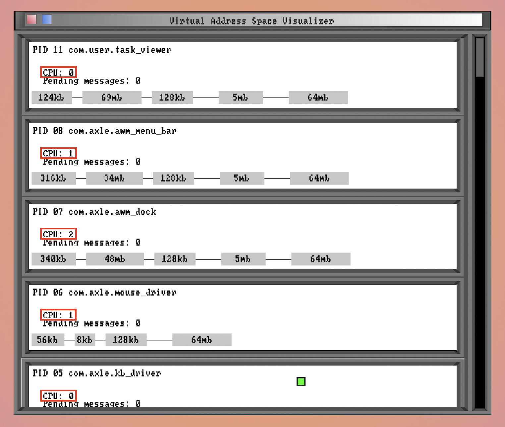
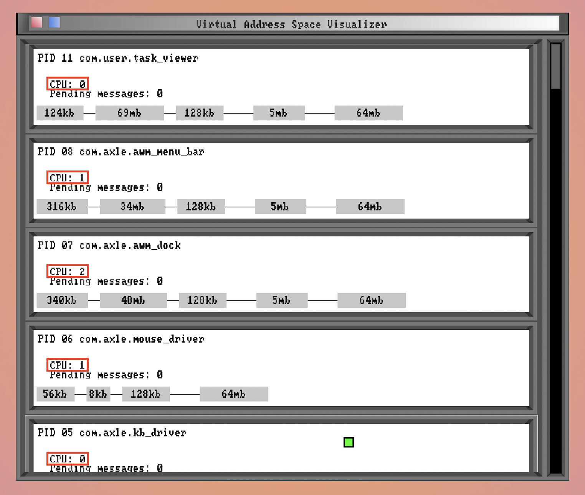

one wheel at a time
axle OS is a hobby microkernel and userspace. I started the project in early 2016, and have had stints of working on it
heavily since then.
axle OS's first incarnation was a multitasking monolithic kernel, with little support for IPC, user-mode or
process loading.
The current incarnation is a microkernel built around variable-length IPC messaging. All applications, including the desktop environment and device drivers, are ELF executables running in userspace.
axle offers C- and Rust-based GUI toolkits.
In September 2021, I ported DOOM.
In late 2021, I ported axle to x86_64 and wrote a UEFI bootloader. I also started implementing system services
and applications in Rust, instead of C.
axle's features (2021+) also include:
 



Most times, you will be running axle in an emulator such as QEMU (the recommended emulator). While axle, like any OS, can be installed on real hardware, emulators are less cumbersome.
To run a pre-built image of axle OS, check the releases page and download an ISO. To execute the axle ISO with qemu, execute the following command:
qemu-system-x86_64 -pflash RELEASEX64_OVMF.fd -drive if=none,id=usb,format=raw,file=axle.iso -usb -device qemu-xhci,id=xhci -device usb-storage,bus=xhci.0,drive=usb -serial file:syslog.log -monitor stdio -m 4G -vga virtio -smp 4 -net nic,model=rtl8139
axle will output kernel logs to syslog.log.
axle is a free and open source project, using the MIT license. If you would like to learn more or contribute to axle, feel welcome to get in touch! The repo is hosted on github, and there's a slack for active contributors/discussion about axle. Feel free to submit a pull request/file an issue/ask to join the slack!